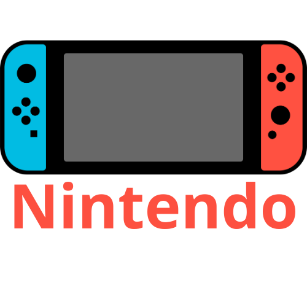

Sobre o jogo
Project Zomboid é um jogo de sobrevivência em mundo aberto com temática de zumbis, desenvolvido e publicado pela The Indie Stone. Lançado inicialmente como acesso antecipado em 2011, o jogo continua sendo desenvolvido e aprimorado até hoje.
O jogo se passa em um ambiente pós-apocalíptico, onde a maioria da população foi transformada em zumbis devido a um vírus misterioso. O jogador assume o papel de um sobrevivente, que deve lutar para sobreviver aos zumbis, encontrar comida, água e abrigo, além de lidar com outros desafios como a deterioração dos equipamentos e a saúde mental do personagem.
Em resumo, Project Zomboid oferece uma experiência de sobrevivência realista em um mundo pós-apocalíptico infestado de zumbis. Com seus elementos de construção, gestão de recursos, saúde mental e evolução dinâmica do ambiente, o jogo cativa os jogadores que procuram um desafio de sobrevivência único. Lembre-se de que as informações podem ter mudado após a minha data de corte em setembro de 2021, então é recomendável verificar as fontes mais recentes para obter as informações mais atualizadas sobre o jogo.
- 